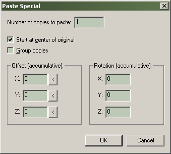

Dialogs: Paste Special
Pastes a copy of any objects in the clipboard into the current file, using special placement information entered into the dialog box.

This dialog allows multiple pasting of the clipboard contents with offsets and rotations. This relieves the work in creating an object that contains many identical elements. For instance, to create a picket fence you can make one rail, then copy it multiple times with on offset for each new rail.
Number of copies to paste
This value controls the number of new copies that will be created by the operation.
Start at center of original
In the default On position, offsets and rotations are relative to the location and rotation of the original item in the clipboard. With it off, the new objects will be created relative to the center of the two previously selected windows.
Group copies
Turning this on will group all resulting objects together. The default for Group copies is off.
Offset (accumulative)
The three boxes here allow offset values for X, Y and Z. With each additional paste, the next object will be offset from the previous one by these values which are given in map units. The '<' buttons beside each box will automatically insert the current grid settings.
Rotation (accumulative)
These settings work in the same fashion as the Offset values, except that they apply rotation with each successive paste.
To create a staircase using Paste Special…
- Create a solid shape to be used as a single stair.
- Position the stair where you would like the staircase to begin.
- Select Copy from the Edit Menu.
- Select Paste Special… from the Edit Menu to bring up the dialog.
- Enter the number of additional stairs you wish to create in the Number of copies to paste field. The total does not include the original – if you want thirty total stairs, enter twenty-nine in this field.
- Under the Offset section, click the arrow next to Z to read in the height of the stair. Increase this value for a steeper staircase
- Click the arrow next to X or Y, depending on which direction your original stair faces.
- Make sure Start at center of original is selected, so that the copies are aligned to the originals stair. Select Group copies if you wish the duplicates to be grouped together.
- Press OK to create the stairs.
© 2004 Valve Corporation. All rights reserved. Valve, the Valve logo, Half-Life, the Half-Life logo, the Lambda logo, Steam, the Steam logo, Team Fortress, the Team Fortress logo, Opposing Force, Day of Defeat, the Day of Defeat logo, Counter-Strike, the Counter-Strike logo, Source, the Source logo, Hammer and Counter-Strike: Condition Zero are trademarks and/or registered trademarks of Valve Corporation. Microsoft and Visual Studio are trademarks and/or registered trademarks of Microsoft Corporation. All other trademarks are property of their respective owners.